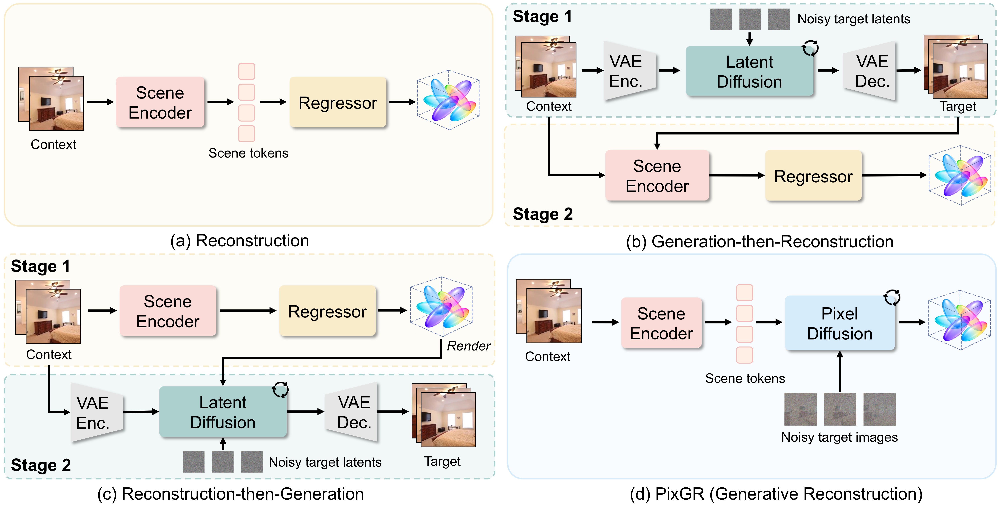
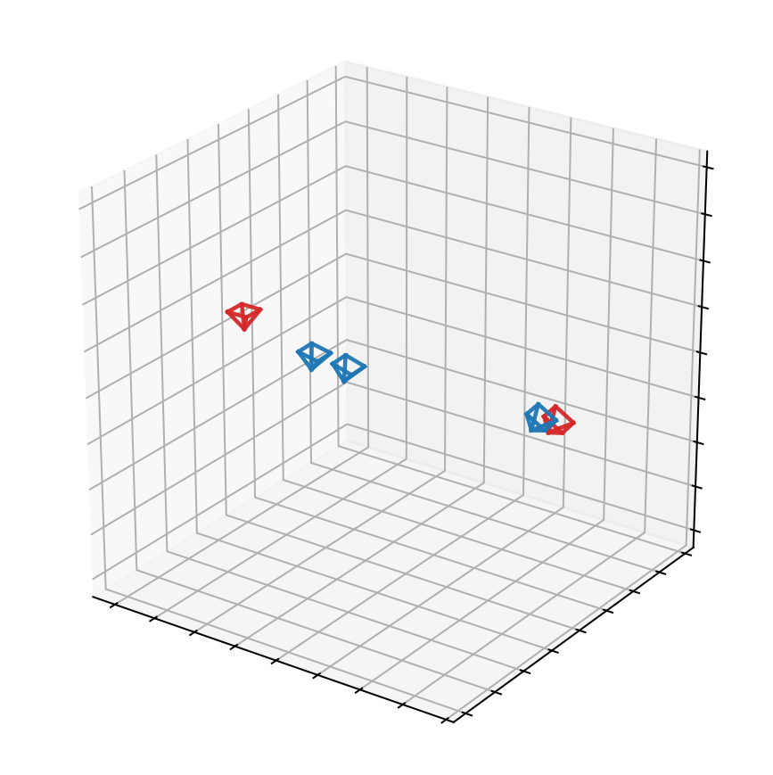
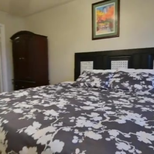
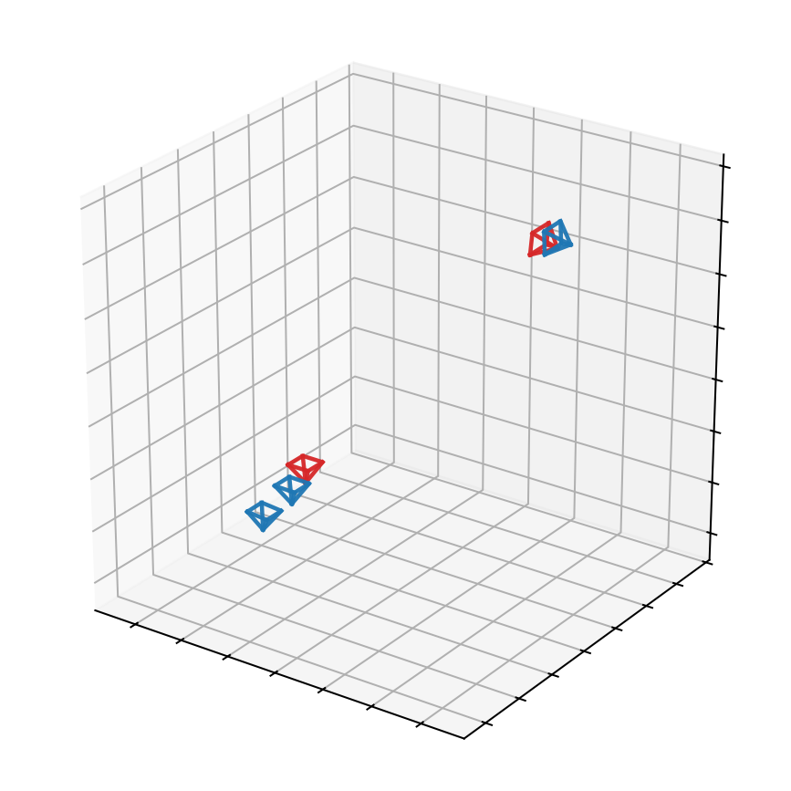
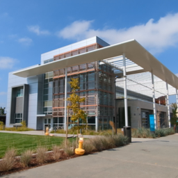
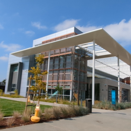
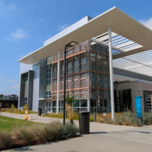
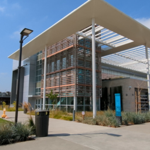
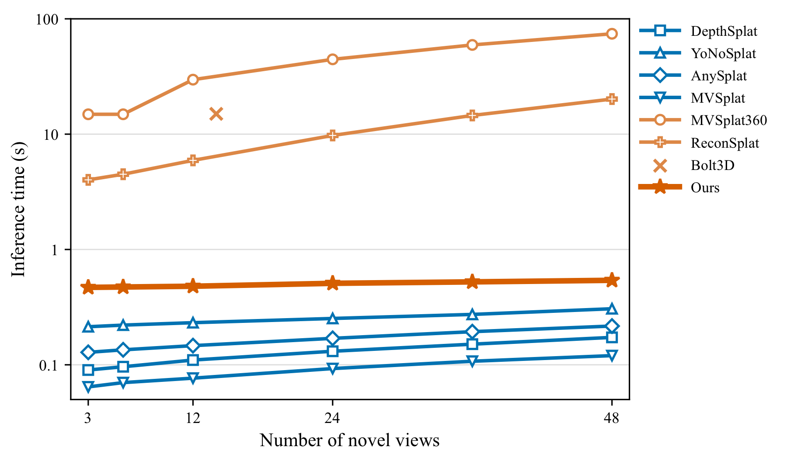

TL;DR: PixGR integrates pixel-space generative decoding into fast feed-forward 3D reconstruction to model uncertainty while maintaining simplicity and efficiency. Context observations are first encoded into a scene latent, which conditions pixel-space generative decoding at noisy target views to produce a shared 3D Gaussian representation.
Denoising more target views improves reconstruction in weakly observed regions.
The generative decoder produces better geometry and appearance in the shared 3D Gaussian representation with more target views.
Interactive 3D Gaussians
k = 0 targets
Loading Gaussian reconstruction…
Why pixel-space generative decoding?
PixGR vs. regression-based decoding. A regressor deterministically maps context representations to 3D Gaussians. PixGR instead performs generative decoding with noisy images at target poses, improving reconstruction under large viewpoint changes and occlusion.
PixGR vs. previous latent-generation models. Two-stage pipelines propagate errors, while VAE latents lose fine detail. PixGR jointly learns generation and reconstruction end-to-end in pixel space.

PixGR vs. Regression-based Decoding
By introducing noisy target views, PixGR improves interpolation when context observations have little overlap and strengthens extrapolation in occluded or unseen regions.
Context
Camera PosesContext and Target

PixGR
Regressor
Context

Camera PosesContext and Target

PixGR
Regressor
Drag each image to compare Regressor and PixGR
PixGR vs. Previous Latent Generation Models
Latent-generation models can lose fine details and introduce geometry misalignment through latent bottlenecks and stage-wise error propagation. PixGR avoids both with end-to-end pixel-space decoding.
Context
ReconSplat
MVSplat360
PixGR
Ground Truth




PixGR keeps feed-forward efficiency.
PixGR encodes the scene once into a latent, uses a lightweight generative decoder trained from scratch to produce a single global 3D Gaussian representation, and efficiently renders all novel views from it.

Inference time versus the number of novel views on a single A100 GPU.
Qualitative Comparison
View Interpolation
Novel views lie within the observed context range.
View Extrapolation
Novel views might lie outside the observed context range.
Quantitative Comparisons
PixGR is evaluated on both view interpolation and the more challenging view extrapolation setting. Best results are shown in bold purple and second-best results are underlined.
View Interpolation
2-view RE10K and 6-view DL3DV.
Method
RE10K
DL3DV
PSNR ↑
SSIM ↑
LPIPS ↓
FID ↓
PSNR ↑
SSIM ↑
LPIPS ↓
FID ↓
Regression-based Methods
MVSplat
26.39
0.869
0.128
2.28
18.12
0.556
0.370
58.20
DepthSplat
27.47
0.889
0.114
2.29
24.19
0.823
0.147
9.51
AnySplat
19.80
0.682
0.274
2.88
19.03
0.554
0.235
16.94
YoNoSplat
25.73
0.851
0.130
3.75
24.83
0.821
0.137
11.56
Generative Methods
latentSplat
23.89
0.813
0.163
2.22
17.22
0.514
0.385
45.66
MVSplat360
26.41
0.869
0.126
—
20.07
0.698
0.257
18.68
ReconSplat
25.57
0.832
0.150
4.29
23.05
0.728
0.205
18.93
PixGR
28.54
0.905
0.104
2.19
25.27
0.840
0.147
11.26
View Extrapolation
2-view RE10K and 4-view DL3DV.
Method
RE10K
DL3DV
PSNR ↑
SSIM ↑
LPIPS ↓
FID ↓
PSNR ↑
SSIM ↑
LPIPS ↓
FID ↓
Regression-based Methods
DepthSplat
22.02
0.822
0.189
6.95
21.59
0.745
0.205
17.41
AnySplat
16.21
0.621
0.351
5.98
14.84
0.449
0.426
22.16
YoNoSplat
23.00
0.810
0.182
6.47
23.04
0.761
0.192
17.21
Generative Methods
latentSplat
22.62
0.777
0.196
2.79
18.35
0.564
0.345
37.65
MVSplat360
23.16
0.810
0.176
1.79
17.91
0.609
0.335
18.23
Bolt3D
23.13
0.806
0.166
3.66
—
—
—
—
ReconSplat
23.98
0.795
0.184
4.49
21.23
0.673
0.249
23.02
PixGR
26.03
0.872
0.141
2.75
23.76
0.802
0.178
12.78
BibTeX
@article{huang2026pixgr,
title = {PixGR: Pixel-Space Generative Decoding for Fast Feed-Forward 3D Reconstruction},
author = {Huang, Ranran and Bian, Wenjing and Luo, Weixun and Mao, Ye and Mikolajczyk, Krystian},
journal = {arXiv preprint arXiv:2610.31908},
year = {2026}
}